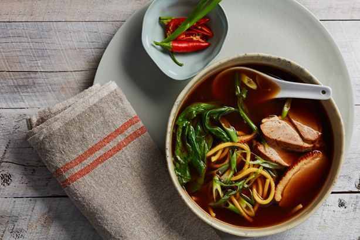

Duck Noodle Soup

Description
A Chinese duck soup that packs a punch- with oodles of noodles and fresh choy sum.
Perfect for the cold winter nights.
Ingredients
- 1 L Campbell's Real Soup Base - Chinese
- 450g hokkien noodles
- 1 bunch choy sum, trimmed and chopped
- 2 Peking duck breasts, sliced
- 2 green spring onions, thinly sliced
Steps
- In a medium to large saucepan bring Campbell's Real Soup Base-Chinese to a boil
- Rinse noodles under warm water to separate, drain well. Add noodles, choy sum and duck to soup base, simmer for 1-2 minutes or until heated through.
- Ladle soup into bowls and top with green spring onions.